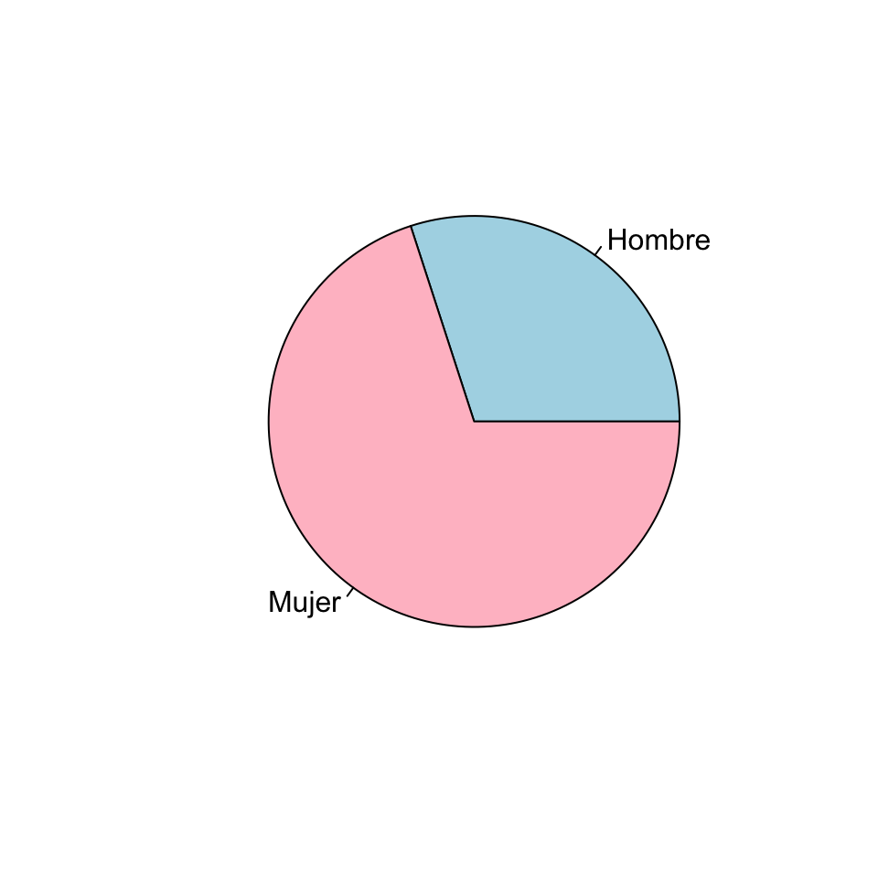
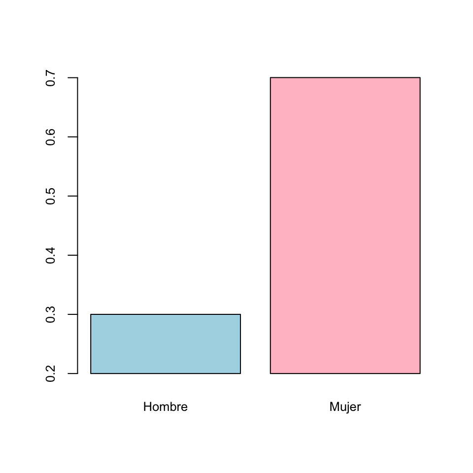
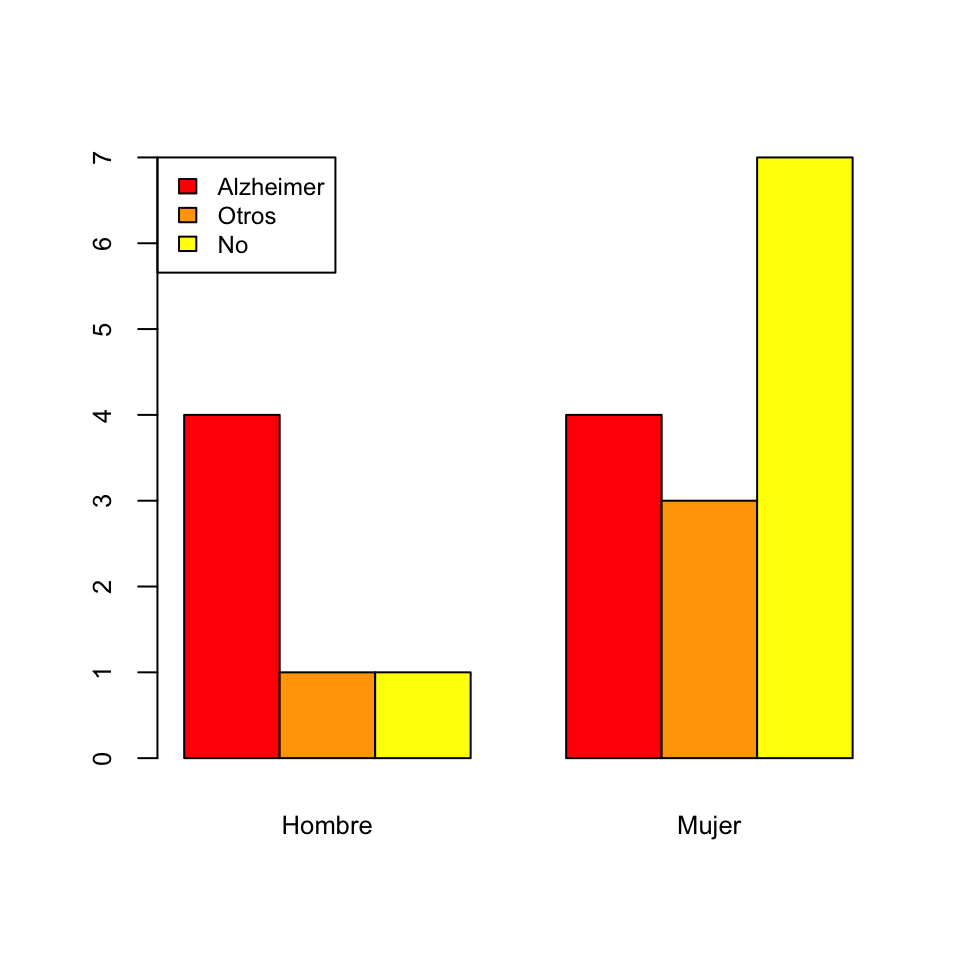
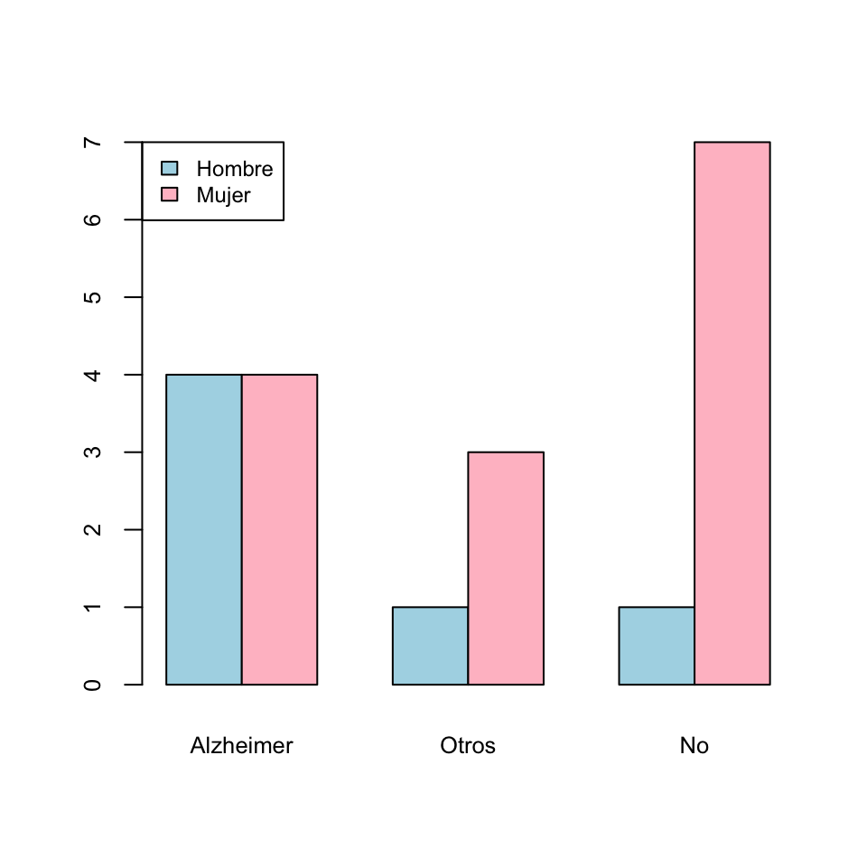
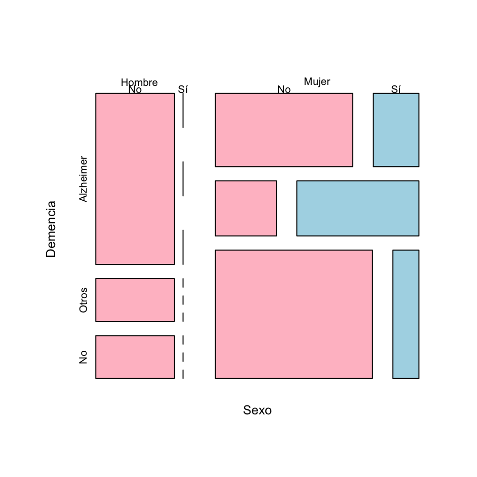

Lección 7 Descripción de datos cualitativos
Los datos cualitativos corresponden a observaciones sobre cualidades de un objeto o individuo, tales como su especie o su sexo, que pueden ser iguales o diferentes y no admiten ningún otro tipo de comparación significativa: por ejemplo, datos para los que no tenga ningún sentido preguntarse si uno es más grande que otro, ni efectuar operaciones aritméticas con ellos, aunque estén representados por números. Llamaremos niveles a los diferentes valores que puede tomar una variable cualitativa; por ejemplo, los dos niveles de una variable “Sexo” serían “Macho” y “Hembra”, o sinónimos.
7.1 Frecuencias
Lo único que podemos hacer con un conjunto de datos cualitativos es contar cuántas veces aparece cada nivel y presentar estas frecuencias en una tabla o por medio de un gráfico. Distinguiremos entre:
Frecuencia absoluta de un nivel: el número de veces que aparece en la muestra.
Frecuencia relativa de un nivel: la fracción del total de la muestra que representa este nivel.
Además, llamaremos la moda al nivel (o a los niveles, en caso de empate) más frecuente. A veces usaremos adjetivos como unimodal, bimodal, multimodal etc. para referirnos, respectivamente, a una variable con una sola moda, con dos modas, con “varias” modas, etc.
Ejemplo 7.1 Hemos recogido información sobre 20 residentes en geriátricos que en el período marzo-mayo de 2020 tuvieron COVID-19. Uno de los datos que hemos recogido sobre estas personas ha sido su sexo. El resultado ha sido una variable cualitativa, que llamaremos “Sexo”, formada por las 20 observaciones siguientes:
Mujer, Mujer, Hombre, Mujer, Mujer, Mujer, Mujer, Mujer, Hombre, Mujer,
Hombre, Hombre, Mujer, Mujer, Hombre, Mujer, Mujer, Mujer, Mujer, HombreSus dos niveles son Hombre y Mujer. En esta variable hay 14 mujeres y 6 hombres. Por lo tanto, éstas son las frecuencias absolutas de estos niveles. Puesto que en total hay 20 individuos, sus frecuencias relativas son:
Hombre: 6/20=0.3
Mujer: 14/20=0.7
La moda de la muestra es el nivel Mujer.
Resumimos estas frecuencias en la tabla de frecuencias siguiente:
| Frecuencia absoluta | Frecuencia relativa | Porcentaje | |
|---|---|---|---|
| Hombre | 6 | 0.3 | 30% |
| Mujer | 14 | 0.7 | 70% |
| Total | 20 | 1.0 | 100% |
El término moda y los adjetivos unimodal, bimodal, etc. también se usan en variables poblacionales: dada una variable poblacional cualitativa, su moda es el nivel más frecuente en el total de la población, cuando existe.
Pero en el caso poblacional, decimos que la variable es unimodal cuando hay un nivel que es mucho más frecuente que el resto, no basta con que haya uno más frecuente. De manera similar, bimodal no significa que la mayor frecuencia de un nivel en la población se dé en dos niveles que empaten exactamente, sino que hay dos niveles con frecuencias parecidas y mucho mayores que el resto.
Por ejemplo, supongamos que tenemos una variable poblacional que puede tomar 4 valores excluyentes: A, B, C, D.
Si en el total de la población los niveles A y B se dan, cada uno, en un 25.1% de los individuos, y los niveles C y D cada uno en un 24.9% de los individuos, no diremos que la variable sea bimodal.
Si en el total de la población el nivel A se da en un 42% de los individuos, el nivel B en un 41% de los individuos, el nivel C en un 9% y el nivel D en un 8%, sí que diremos que es bimodal, aunque A sea más frecuente que el resto.
7.2 Gráficos
Podemos representar una tabla de frecuencias como la de la sección anterior mediante un diagrama de barras, en el que para cada nivel dibujaremos una barra cuya altura represente su frecuencia (absoluta o relativa). Por ejemplo, el diagrama de barras de las frecuencias absolutas de la variable “Sexo” de la sección anterior es:

Su diagrama de barras de frecuencias relativas es:
Observad que la única diferencia entre estos dos gráficos son las marcas del eje vertical que indican las alturas de las barras.
Con JAMOVI, tras entrar los datos en una variable (importando un fichero de datos o entrándolos a mano en Datos), podéis calcular las tablas de frecuencias absolutas y relativas y el diagrama de barras de frecuencias absolutas de una variable cualitativa usando las casillas adecuadas de la sección Exploración/Descriptivas, tal y como se muestra en la imagen siguiente:
Antes de continuar, observad que JAMOVI incluye en la tabla de frecuencias una columna “% Acumulado” sin que se la pidamos. Solo la tendremos en cuenta si la variable es ordinal.
Un tipo muy popular de representación gráfica de variables cualitativas son los diagramas circulares, donde se representan los niveles de una variable cualitativa como porciones circulares de un círculo, de manera que el ángulo de cada porción (o equivalentemente, su área) sea proporcional a la frecuencia del nivel al que corresponde. Así, el diagrama circular de la variable dicotómica “Sexo” sería el siguiente:

Pese a su popularidad, es poco recomendable usar diagramas circulares cuando se manejan más de dos niveles, porque a veces es difícil, a simple vista, comprender las relaciones entre las frecuencias que representan. Para convencerse, basta comparar los diagramas de barras y los diagramas circulares de la figura siguiente, importada de la entrada sobre diagramas circulares de la Wikipedia:

Algunos programas ofrecen la posibilidad de dibujar diagramas circulares tridimensionales como el siguiente:

Estos diagramas quedan muy bonitos, pero son aún peores que los diagramas circulares planos, puesto que la perspectiva deforma las áreas. A simple vista, en el diagrama anterior, ¿qué frecuencia es mayor: la del nivel representado por el color azul oscuro, o la del correspondiente al verde claro?
Un gráfico ha de servir más que mil palabras, y tiene que explicar de un vistazo las características más relevantes de los datos que representa. Luego ya se pueden añadir detalles que complementen esta primera comprensión básica. En el caso de un diagrama de barras, su objetivo ha de ser mostrar la relación entre las magnitudes de las frecuencias que representa; si nos interesan sus valores concretos, es mejor dar la tabla. Por ejemplo, en los diagramas de barras de la variable “Sexo” dados más arriba se ve a simple vista que hay aproximadamente el doble de mujeres que de hombres.
Por ese motivo es un pecado mortal modificar un gráfico para que el primer vistazo sea engañoso. En un diagrama de barras, la adulteración más usual, y ante la que hay que estar atentos, es truncarlo de manera que el eje de coordenadas que indique las frecuencias no arranque en el 0. Mirad, por ejemplo, el diagrama de barras siguiente:

Este diagrama sigue indicando que en la muestra hay un 30% de hombres y un 70% de mujeres, pero si le dais un vistazo superficial, sin mirar las marcas del eje vertical, parece que la proporción de mujeres es cinco veces la de los hombres y no un poco más del doble.
Es muy frecuente encontrar diagramas de barras (u otros tipos de gráficos) truncados en medios de comunicación. Por ejemplo mirad el gráfico siguiente, que representa la evolución del uso del catalán en las pruebas de Selectividad en la UIB desde 1992 a 2010:
El incremento en la realidad fue menos pronunciado:
7.3 Tablas de frecuencias multidimensionales
Cuando medimos más de una variable cualitativa sobre un mismo grupo de individuos, representamos sus frecuencias absolutas o relativas mediante tablas de contingencia multidimensionales.
Ejemplo 7.2 Continuemos con nuestra muestra de 20 pacientes en residencias geriátricas. Además de su sexo, hemos anotado otras dos características: una variable “Demencia” que recoge si en el momento del ingreso en la residencia habían sido diagnosticados con algún tipo de demencia senil, con niveles “No”, “Alzheimer” y “Otros” (para indicar otros diagnósticos de demencia no-Alzheimer), y una variable “Cancer” que indica si en algún momento han sufrido o no cáncer de mama.
| Sexo | Demencia | Cancer | |
|---|---|---|---|
| 1 | Mujer | No | No |
| 2 | Mujer | Alzheimer | Sí |
| 3 | Hombre | Alzheimer | No |
| 4 | Mujer | Otros | No |
| 5 | Mujer | Alzheimer | No |
| 6 | Mujer | Otros | Sí |
| 7 | Mujer | No | No |
| 8 | Mujer | Alzheimer | No |
| 9 | Hombre | Otros | No |
| 10 | Mujer | Otros | Sí |
| 11 | Hombre | Alzheimer | No |
| 12 | Hombre | Alzheimer | No |
| 13 | Mujer | No | No |
| 14 | Mujer | No | No |
| 15 | Hombre | Alzheimer | No |
| 16 | Mujer | No | Sí |
| 17 | Mujer | No | No |
| 18 | Mujer | No | No |
| 19 | Mujer | Alzheimer | No |
| 20 | Hombre | No | No |
La tabla bidimensional de frecuencias absolutas de las variables “Sexo” y “Demencia”, que nos da la frecuencia absoluta de cada combinación de sexo y tipo de demencia senil, es:
| Alzheimer | Otros | No | |
|---|---|---|---|
| Hombre | 4 | 1 | 1 |
| Mujer | 4 | 3 | 7 |
y la tabla tridimensional de frecuencias absolutas de las tres variables, que nos da la frecuencia absoluta de cada combinación de sexo, tipo de demencia senil y si se ha sufrido o no cáncer de mama, es:
| Cancer | No | Sí | ||
| Sexo | Demencia | |||
| Hombre | Alzheimer | 4 | 0 | |
| Otros | 1 | 0 | ||
| No | 1 | 0 | ||
| Mujer | Alzheimer | 3 | 1 | |
| Otros | 1 | 2 | ||
| No | 6 | 1 |
Con JAMOVI, estas tablas se obtienen fácilmente separando una variable por la otra (u otras) y marcando las mismas casillas en Exploración/Descriptivas que en el caso unidimensional:
Las tablas bidimensionales se pueden obtener de manera más adecuada en Frecuencias/Muestras independientes: lo explicaremos dentro de un rato.
A menudo es conveniente añadir a una tabla de contingencia multidimensional, filas y columnas marginales (en los márgenes) con las frecuencias totales de cada nivel dentro de cada variable. De esta manera, también tenemos las tablas de frecuencias de cada una de las variables. Por ejemplo, si añadimos la fila y la columna marginales a la tabla bidimensional anterior obtenemos:
| Alzheimer | Otros | No | Total | |
|---|---|---|---|---|
| Hombre | 4 | 1 | 1 | 6 |
| Mujer | 4 | 3 | 7 | 14 |
| Total | 8 | 4 | 8 | 20 |
Las tablas multidimensionales de frecuencias relativas son algo más complicadas porque dichas frecuencias relativas se pueden calcular en el total de la muestra (las llamamos frecuencias relativas globales) o dentro de los niveles de una de las variables (por filas o por columnas, en el caso bidimensional), en función de lo que nos interese medir. Por ejemplo:
- Si nos interesa la fracción de pacientes de cada combinación de sexo y tipo de demencia senil en el total de la muestra, usaremos la tabla de frecuencias relativas globales de las variables “Sexo” y “Demencia”:
| Alzheimer | Otros | No | |
|---|---|---|---|
| Hombre | 0.2 | 0.05 | 0.05 |
| Mujer | 0.2 | 0.15 | 0.35 |
Observad que la suma de todas las entradas de la tabla es 1, lo que indica que estas frecuencias indican proporciones del total de la muestra.
Por ejemplo, la entrada superior izquierda de esta tabla nos dice que los hombres con Alzheimer representan el 20% del total de la muestra. Es decir, si en nuestra muestra $A$ representa el suceso "Tener Alzheimer" y $H$ el suceso "Ser hombre", esta entrada dice que $P(A\cap H)=0.2$. - Si nos interesa la fracción de pacientes con cada tipo de demencia senil dentro de cada sexo, usaremos la tabla de frecuencias relativas de la variable “Demencia” dentro de la variable “Sexo”:
| Alzheimer | Otros | No | |
|---|---|---|---|
| Hombre | 0.6667 | 0.1667 | 0.1667 |
| Mujer | 0.2857 | 0.2143 | 0.5000 |
En esta tabla, la suma de las entradas de cada fila es 1, lo que indica que las frecuencias son proporciones dentro de cada fila.
Por ejemplo, la entrada superior izquierda de esta tabla nos dice que los hombres con Alzheimer representan el 66.67% de los hombres de la muestra. Es decir, con las notaciones anteriores, que $P(A|H)=0.6667$. - Si nos interesa la fracción de pacientes de cada sexo dentro del grupo de pacientes con cada tipo de demencia senil, usaremos la tabla de frecuencias relativas de la variable “Sexo” dentro de la variable “Demencia”:
| Alzheimer | Otros | No | |
|---|---|---|---|
| Hombre | 0.5 | 0.25 | 0.125 |
| Mujer | 0.5 | 0.75 | 0.875 |
En esta tabla, la suma de las entradas de cada columna es 1, lo que indica que las frecuencias son proporciones dentro de cada columna.
Por ejemplo, la entrada superior izquierda de esta tabla nos dice que los hombres con Alzheimer representan el 50% de los enfermos de Alzheimer de la muestra. O sea, de nuevo con las notaciones anteriores, que $P(H|A)=0.5$. En una tabla de contingencia de frecuencias relativas globales, tiene sentido añadir filas y columnas marginales, que nos darán las frecuencias relativas de los niveles de cada variable.
| Alzheimer | Otros | No | Total | |
|---|---|---|---|---|
| Hombre | 0.2 | 0.05 | 0.05 | 0.3 |
| Mujer | 0.2 | 0.15 | 0.35 | 0.7 |
| Total | 0.4 | 0.2 | 0.4 | 1 |
Pero en una tabla de contingencia de frecuencias relativas de una variable respecto de otra no tiene mucho interés. Por ejemplo, añadamos las marginales a la tabla de frecuencias relativas de la variable “Demencia” dentro de la variable “Sexo”:
| Alzheimer | Otros | No | Total | |
|---|---|---|---|---|
| Hombre | 0.6667 | 0.1667 | 0.1667 | 1 |
| Mujer | 0.2857 | 0.2143 | 0.5 | 1 |
| Total | 0.9524 | 0.381 | 0.6667 | 2 |
Como hemos calculado las frecuencias relativas dentro de cada fila, la suma de las frecuencias relativas de cada fila ha de ser 1. Ahora fijaos en la fila Total. Nos dice por ejemplo que la suma de la proporción de hombres que tienen Alzheimer, 0.6667, y de la proporción de mujeres que tienen Alzheimer, 0.2857, es 0.9523. ¿Qué significado tiene este número? Ninguno, y en todo caso de ninguna manera significa que la proporción de individuos con Alzheimer en la muestra sea 0.9523, ya que esta proporción es del 40%.

Las tablas de contingencia bidimensionales con frecuencias relativas marginales se obtienen con JAMOVI en la sección Frecuencias/Muestras independientes. Por ejemplo, si declaramos la variable “Sexo” como la de las filas y la variable “Demencia” como la de las columnas y marcamos Frecuencias observadas en la pestaña Celdas, entonces podemos pedir en las casillas de la columna Porcentajes que se calculen las frecuencias relativas por filas, por columnas o en el total. Por ejemplo, por filas:

Olvidaos por ahora de la tabla “Pruebas de \(\chi^2\)” que aparece en el resultado, ya hablaremos de ella al hablar de contrastes de proporciones. Podéis impedir que aparezca desmarcando la casilla \(\chi^2\) en la pestaña Estadísticas, que sale marcada por defecto.
7.4 Diagramas de barras bidimensionales
Una tabla de frecuencias bidimensional se suele representar mediante un diagrama de barras bidimensional, que puede ser:
De barras apiladas: Se escoge una variable (la llamaremos principal), se dibuja una barra para cada uno de sus niveles de altura la frecuencia total de dicho nivel, y cada una de estas barras se divide verticalmente en sectores que representan las frecuencias de los niveles de la otra variable dentro de ese nivel.
Por ejemplo, el diagrama de barras apiladas de frecuencias absolutas de las variables “Sexo” y “Demencia” de la Tabla 7.1, tomando la variable “Sexo” como principal:

De barras yuxtapuestas. Se escoge una variable principal y para cada uno de sus niveles se dibuja un diagrama de barras de las frecuencias de los niveles de la otra variable.
Así, el diagrama de barras yuxtapuestas de frecuencias absolutas de las variables “Sexo” y “Demencia”, tomando la variable “Sexo” como principal es:

Otros dos ejemplos:
- El diagrama de barras apiladas de frecuencias absolutas de las variables “Sexo” y “Demencia”, tomando la variable “Demencia” como principal es:

- El diagrama de barras yuxtapuestas de frecuencias absolutas de las variables “Sexo” y “Demencia”, tomando la variable “Demencia” como principal:

Los diagramas de barras tienen que mostrar la información de la manera más adecuada posible. Por ejemplo, si lo que nos interesa es la distribución de los tipos de demencia por sexo, la variable principal ha de ser el “Sexo”. Si nos interesan las frecuencias relativas globales, seguramente sea más conveniente dar un diagrama de barras tomando como niveles las combinaciones de niveles de ambas variables, como el siguiente diagrama de barras de frecuencias relativas globales de las variables “Sexo” y “Demencia”:
El usar barras apiladas o yuxtapuestas en un diagrama de barras bidimensional ya va más a gusto de cada uno. Como un diagrama de barras yuxtapuestas usa tantas barras como el producto de los números de niveles de las dos variables, si estos dos números son grandes puede necesitar mucho espacio horizontal para ser comprensible. Por otro lado, en los diagramas de barras apiladas es más fácil comparar las frecuencias de los niveles de la variable principal, mientras que en los diagramas de barras yuxtapuestas es más fácil comparar la distribución de los niveles de la variable secundaria dentro de cada nivel de la variable principal.
Lo diagramas de barras bidimensionales se obtienen con las casillas adecuadas de la pestaña Gráficos en Frecuencias/Muestras independientes. Podéis elegir si queréis las barras apiladas (Alineados) o yuxtapuestas (Al lado), si el diagrama de barras ha de ser de frecuencias abolutas o relativas y en este último caso qué tipo de frecuencias relativas (del total, por filas o por columnas) y si la variable principal es la de las filas o las columnas. Por ejemplo, el diagrama de barras yuxtapuestas de frecuencias absolutas de las variables “Sexo” y “Demencia”, tomando la variable “Demencia” como principal, se obtiene de la manera siguiente:
En un estudio transversal en el que se analizó 75 hombres y 70 mujeres, 40 hombres y 20 mujeres presentaron una determinada enfermedad.
Representad estos datos en un diagrama de barras bidimensional de frecuencias relativas que muestre las proporciones de enfermos y sanos en cada sexo.
¿Qué vale la frecuencia relativa de los hombres entre los participantes que no presentaron la enfermedad?
7.5 Diagramas de mosaico
Una tabla tridimensional se puede representar mediante un diagrama de mosaico. Estos gráficos se obtienen sustituyendo cada entrada de la tabla de frecuencias por una región rectangular de área proporcional a su valor. Por ejemplo, el diagrama de mosaico de la Tabla 7.1 es el siguiente (donde los “Sí” y “No” de la fila superior corresponden a la variable “Cancer”):

7.6 Test
(1) Para comparar el alcance del alcoholismo en Barcelona y en Palma, ¿qué es más adecuado usar?
- Las frecuencias absolutas de alcohólicos en Palma y en Barcelona.
- Las frecuencias relativas de alcohólicos en Palma y en Barcelona.
- Las frecuencias relativas de palmesanos y de barceloneses entre los alcohólicos españoles.
- Las frecuencias relativas de palmesanos alcohólicos y de barceloneses alcohólicos en el total de los españoles.
(2) ¿Qué representa el 0.36 de la tabla de contingencia siguiente? \[ \begin{array}{lc} &\hphantom{YY}\textbf{Propiedad X} \\ \begin{array}{l} \textbf{Propiedad Y} \end{array} &\!\!\!\!\! \begin{array}{r |c|c|} &\text{Sí} & \text{No} \\ \hline \text{Sí} & 0.23 & 0.36\\ \text{No} & 0.17 & 0.24\\ \end{array} \end{array} \]
- La frecuencia relativa de individuos con la propiedad Y en el total de la muestra.
- La frecuencia relativa de individuos con la propiedad Y entre los que no tienen la propiedad X.
- La frecuencia relativa de individuos sin la propiedad X entre los que tienen la propiedad Y.
- La frecuencia relativa de individuos con la propiedad Y y sin la propiedad X en el total de la muestra.
- No podemos saberlo sin conocer la fila y la columna marginales.